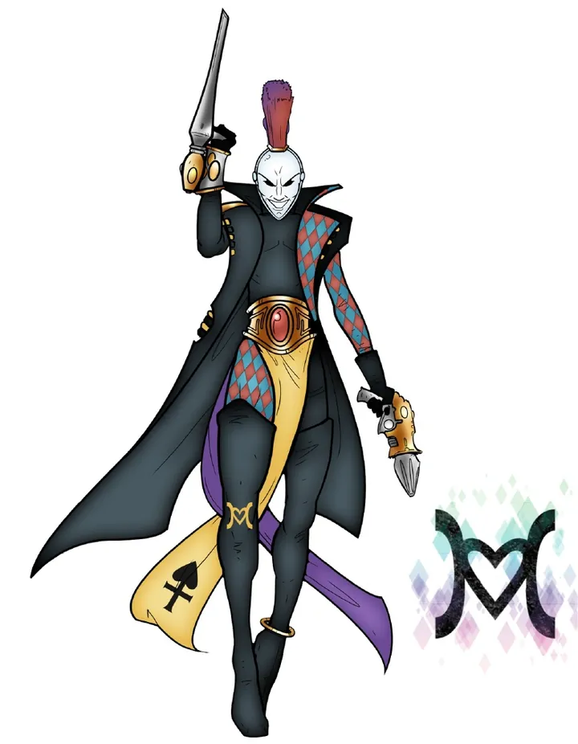
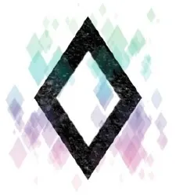
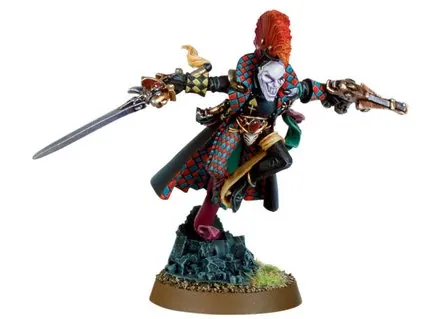
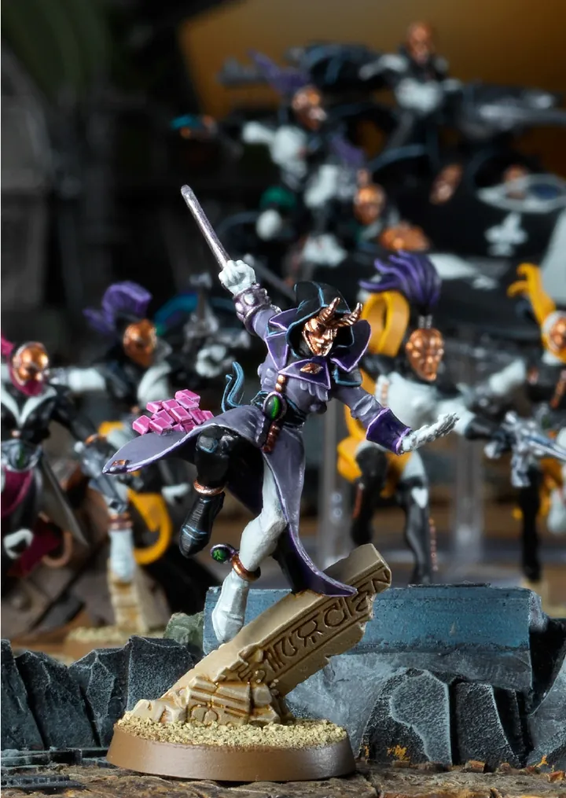
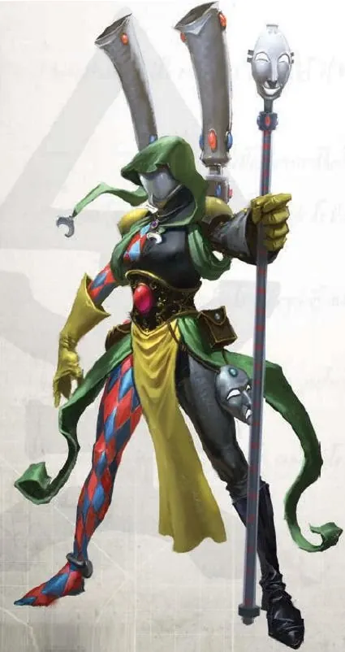
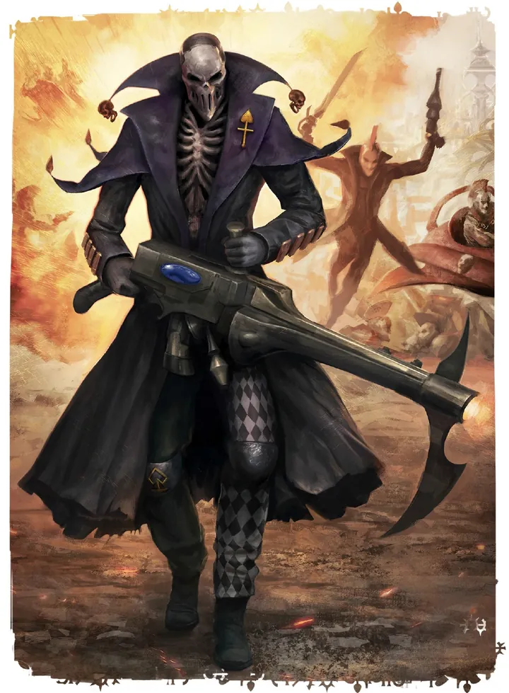
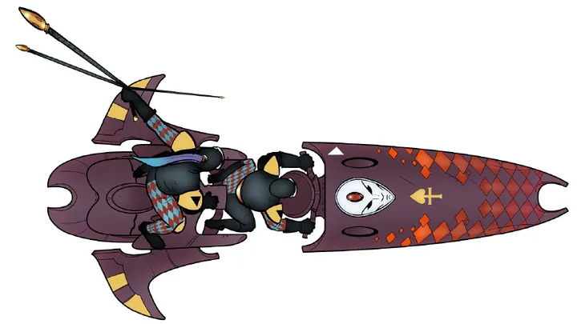
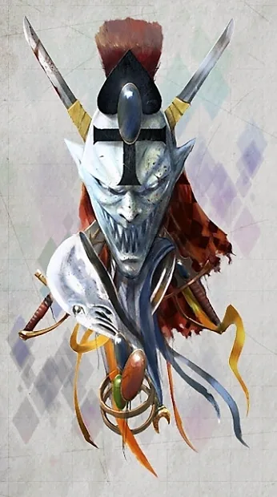

01ภาพรวม
นักรบนักเต้นผู้รับใช้ Cegorach เทพหัวเราะ — ผู้พิทักษ์ Black Library และตำนานของ Aeldari
02ต้นกำเนิด
เมื่อเกิด The Fall เทพ Aeldari เกือบทั้งหมดถูก Slaanesh ทำลาย แต่ Cegorach (Laughing God) หนีรอดด้วยเล่ห์กลแล้วซ่อนตัวใน Webway สาวกของเขาคือ Harlequins ผู้ไม่ขึ้นกับ Craftworld หรือ Commorragh
03เนื้อเรื่องเจาะลึก
Cegorach ผู้รอดชีวิต
เมื่อ Slaanesh ถือกำเนิด เทพ Aeldari ส่วนใหญ่ถูกฆ่า Cegorach เทพหัวเราะหนีรอดไปซ่อนใน Webway Harlequins คือผู้รับใช้ของเขา เดินทางไปแสดงให้ Aeldari ทุกกลุ่ม — Craftworld, Drukhari และ Exodites — และเป็นหนึ่งในไม่กี่กลุ่มที่ทุกฝ่ายยอมรับ
04ยุค 30K — ในยุค Great Crusade และ Horus Heresy
ยุค 30K Harlequins ยังคงเร่ร่อนแสดงตำนานใน Webway แบบเดียวกับยุค 40K
ดูภาพรวมยุค 30K ทั้งหมดที่ เนื้อเรื่องยุค 30K และความต่างของสองยุคที่ เปรียบเทียบ 30K vs 40K
05นิสัยและวัฒนธรรม
- แสดงละครเล่าตำนาน The Fall ให้ชาว Aeldari ทุกกลุ่มดู — เป็นหนึ่งในไม่กี่กลุ่มที่เดินทางไปได้ทั้ง Craftworld และ Commorragh
- เกราะเปลี่ยนสีหลอกตา (Holo-suit) และหน้ากากที่แสดงความกลัวของศัตรู
- Solitaire: นักแสดงที่ต้องรับบทเป็น Slaanesh — ได้รับการหลีกเลี่ยงจากทุกคน
06จุดที่น่าสนใจ
- ปกป้อง Black Library คลังความรู้เกี่ยวกับ Chaos ใน Webway
- ทำงานร่วมกับ Ynnari เพื่อหาทางช่วยชาว Aeldari
07ความสามารถพิเศษ
สิ่งที่ทำให้ Harlequins แตกต่างจากทัพอื่น — ทั้งพลังที่ติดตัวมาทั้งเผ่า/ทัพ และความสามารถของบุคคลสำคัญ
ของทั้งเผ่า/ทัพ

Holo-suit — ร่างที่มองไม่เห็นชัด
ชุดของ Harlequins แตกภาพเป็นเศษแสงหลากสีเมื่อเคลื่อนไหว (Domino Field) ทำให้ศัตรูเล็งยากมาก

การรบคือการแสดง
ทุกการรบคือการเต้นรำเล่าตำนานของเทพหัวเราะ Cegorach — ท่วงท่าอ่อนช้อยแต่ร้ายแรง แต่ละคนมีบทบาทเหมือนตัวละครในละคร
ผู้เฝ้า Black Library
Harlequins คือผู้เดียวที่เข้าถึง Black Library ห้องสมุดลับใน Webway ที่เก็บความรู้เรื่อง Chaos ทั้งหมด

อิสระจาก Slaanesh
เชื่อกันว่า Cegorach ปกป้องวิญญาณของ Harlequins ไม่ให้ถูก Slaanesh กลืนกิน พวกเขาจึงไม่ต้องใช้ Spirit Stone แบบเดียวกับชาว Craftworld
ของบุคคลสำคัญ

Solitaire
ผู้แสดงบท Slaaneshนักแสดงที่รับบทเทพปีศาจ ต้องอยู่อย่างโดดเดี่ยวตลอดชีวิต เชื่อกันว่าวิญญาณของพวกเขาเป็นของ Slaanesh แล้ว
08หน่วยและบทบาทในกองทัพ
Harlequins คือคณะละคร-นักรบของเทพหัวเราะ Cegorach (Laughing God) เล่าเรื่องตำนานผ่านการแสดงและการรบ แต่ละคณะ (Masque) แบ่งบทบาทตามตัวละครในตำนาน
Troupe Master
ทรูปมาสเตอร์หัวหน้าคณะละคร นำการแสดงและการรบ

Shadowseer
ชาโดว์เซียร์ผู้ใช้พลังจิตสร้างภาพลวงตา ปกป้องคณะด้วยหมอกและเงา

Death Jester
เดธเจสเตอร์ตัวตลกแห่งความตาย สวมกระดูก ยิงปืน Shrieker Cannon ที่ทำให้เหยื่อระเบิดจากข้างใน และพบความขบขันในความตาย
Solitaire
โซลิแทร์ผู้แสดงบท Slaanesh ในละคร ต้องอยู่คนเดียวตลอดไป เป็นนักรบที่เร็วที่สุดใน Aeldari
Players
เพลเยอร์นักแสดง-นักรบในชุดหลากสี ใช้การเต้นเป็นการต่อสู้

Skyweavers
สกายวีฟเวอร์Harlequins ขี่ยานบินสองที่นั่ง โจมตีรวดเร็ว
09วีรกรรมและเหตุการณ์สำคัญ
หลบหนีจาก Slaanesh
Cegorach รอดชีวิตหลัง The Fall
ร่วมก่อตั้ง Ynnari
Harlequins ช่วยให้ Yvraine เติบโตเป็นผู้นำ
10ตัวละครสำคัญ

Cegorach
Laughing Godเทพเพียงไม่กี่องค์ที่รอดจาก Slaanesh
11ยุค 40K — สหัสวรรษที่ 41
ยุค 40K Harlequins ปรากฏตัวในสมรภูมิเพื่อทำตามแผนลับของ Cegorach
12เนื้อเรื่องล่าสุด (Era Indomitus / M42)
ยังคงทำหน้าที่ทูตและผู้พิทักษ์ระหว่างกลุ่มต่าง ๆ ของ Aeldari ในยุคที่ Great Rift ทำให้ Webway ไม่ปลอดภัย
หลังการเกิด Great Rift ปฏิทินของจักรวรรดิคลาดเคลื่อน เหตุการณ์ยุคปัจจุบันจึงมักระบุเพียง 'M42' ไม่มีปีที่แน่นอน
13แกลเลอรี